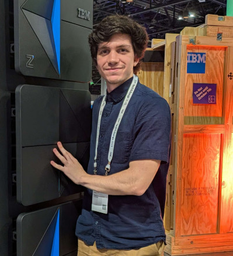

[ About ]
Myself

Me with a z17 IBM Mainframe at the 2025 IBM TechXchange
I'm a software engineer working at the Virginia Spaceport Authority at the Mid-Atlantic Regional Spaceport. I recently graduated from Virginia Commonwealth University with my bachelors in Computer Science with a minor in Artificial Intelligence.
I've been playing with computers my entire life, and quickly became my family's domestic "IT guy".
I'm particularly interested in servers, distributed systems, networking, and VM machines and deployment.
I am an avid Linux/BSD user. I primarily run Arch as my daily driver and Ubuntu for my servers. I'm the primary maintainer of the RHEL Servers at my workplace.
_-_
/ _ \
/ /#\ \
/ /###\ \
/ /#####\ \
/ /##/Λ\##\ \
/ /#### ####\ \
/ /#### | ####\ \
/ /#### | ####\ \
/ /##### | #####\ \
/ /## ### _ ### ##\ \
/ /## | ## /-\ ## | ##\ \
/ /### | # /---\ # | ###\ \
/ /### | _/-----\_ | ###\ \
/ /##|__--- ---|##\ \ \
/ /__-- --__\ \
/ VIRGINIA SPACEPORT \
\____________AUTHORITY____________/
University Extracurriculars:
- President of Virginia Commonwealth University's Linux User Group.
- Admin and server technician for VCU programming contests.
- Volunteer worker in the High-Performance Research Computing facility.
- TA for CMSC440 (Senior Course Networking & Data Communications).
- Sit on the board of student organization engineering presidents.
- Mentor in the VCU Engineering mentorship program.
These are a few of my favorite things:
- Movie: Akira
- OS: FreeBSD
- Game: RimWorld
- Artist: Ryo Fukui
- Shows: Aqua Teen Hunger Force & Seinfeld
The Site
This site's primary goal is to serve as a hypertext résumé with an emphasis on ease-of-navigation. It's hosted on a free Oracle VM. All my other sites are locally hosted from a couple of computers I left in my closet.
More about the site can be read about on the Portfolio » page.
View the site's GitHub repo ».
Contact Me
Email: rutanj@vcu.edu | LinkedIn: jonathanrutan | GitHub: JonFRutan